Drone Survey for Agriculture
In short: we survey farmland with drones carrying RGB, multispectral, hyperspectral, LiDAR and thermal sensors. Our GIS team turns the imagery into NDVI, NDRE and VARI crop health maps, soil and moisture maps, terrain and slope models, orthomosaic maps and 3D models used for planting, irrigation and treatment decisions. See multispectral and hyperspectral surveys.
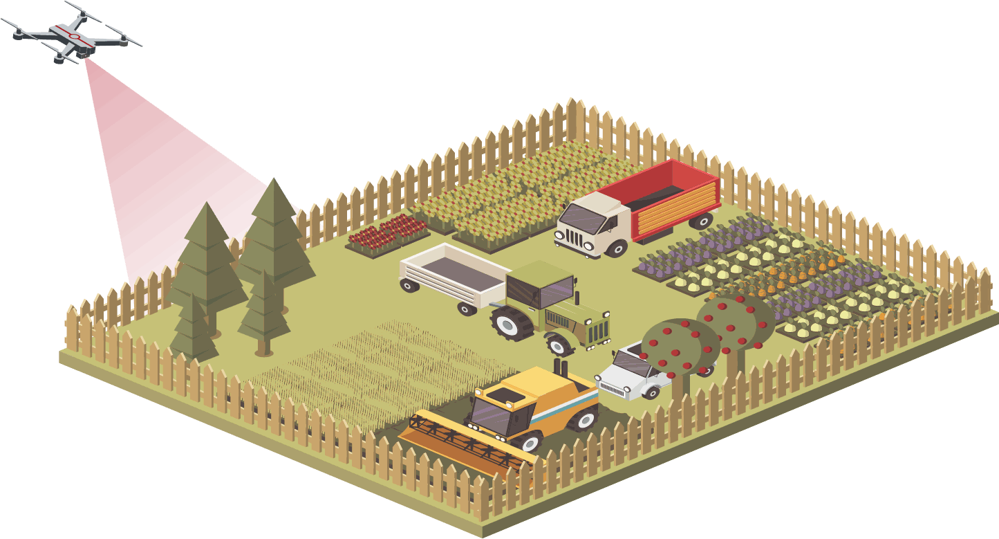
Pre-planting
Terrain and Slope Model:
- Generated using drones with RGB sensors.
- Facilitates field traffic management and seeding decisions.
- Speeds up crop line planning compared with ground-based methods.
Navigation Enhancement:
- Topographic maps integrated into farm vehicles' navigation and autopilot systems.
- Enables precise and efficient cultivation practices.
- Used for estimating crop heights later in the season.
Site Safety Management
- Generated using drones with RGB sensors.
- Facilitates field traffic management and seeding decisions.
- Speeds up crop line planning compared with ground-based methods.
We generate a terrain and slope model of your field from RGB drone imagery. It is used for field traffic management and seeding decisions, and makes crop line planning quicker than ground-based methods.
For more precise and efficient cultivation, farm vehicles' navigation and autopilot systems can be updated with topographic maps of the fields. Later in the season, this data will also be required as the starting point for estimating crop heights.
UAVs create accurate 3D maps and models of fields, showing crop growth patterns, yield estimates and spatial variability. This supports crop planning and planting decisions.
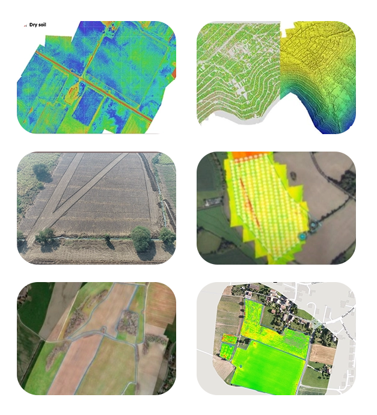
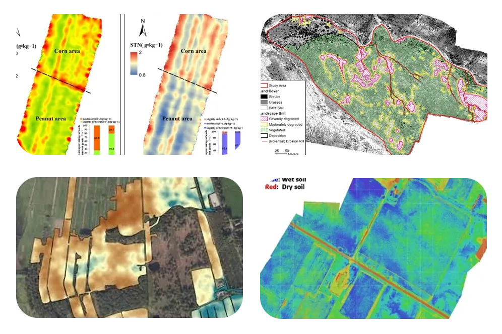
Drones collect soil data quickly, giving a clear, agreed picture of field conditions and reducing time spent on the ground.
Drones with an RGB sensor collect soil data to identify compaction, erosion and poaching on your farm. NIR, multispectral and thermal sensors can detect soil types and moisture levels.
- RGB sensors on drones allow soil data to be collected quickly, reducing uncertainty about field conditions.
- RGB imagery shows compaction, erosion and poaching, to inform field management.
- NIR or multispectral sensors detect different soil types and moisture levels.
- Thermal sensors detect temperature variations that indicate soil moisture and soil health.
- Drone soil monitoring helps farmers collect data faster, allocate inputs better and act in time to improve soil fertility and yields.
Mid-Season
Hyperspectral based species mapping
Utilizing hyperspectral sensors on drones enables precise species mapping by capturing spectral signatures. These sensors detect unique wavelengths reflected by various vegetation types, aiding in accurate species identification. Data processing techniques analyse spectral information to map species distribution and abundance. This approach offers efficient and non-invasive monitoring of ecosystems for biodiversity conservation and management.
Hyperspectral drone surveys support ecological research and environmental monitoring.
Crop health and stress analysis
Our multispectral and thermal drone surveys capture detailed imagery of fields to monitor crop health and detect pests, disease and nutrient deficiencies. Multispectral sensors can show disease and stress at an early stage, sometimes before it is visible on the ground or in standard colour images. The processed data feeds irrigation monitoring, crop health monitoring and treatment planning.
Using RGB sensors, crop variability can be assessed using the visual atmospheric resistance index (VARI); however, NIR and multispectral sensors are better at detecting and distinguishing crop stress using the Normalized Difference Vegetation Index (NDVI). Normalized Difference Red Edge (NDRE) is also often used in conjunction with multispectral data, offering more accurate crop health analysis in later growing stages. Thermal cameras can also be used to determine crop water stress by picking up variations in temperature within a crop, indicating irrigation issues.
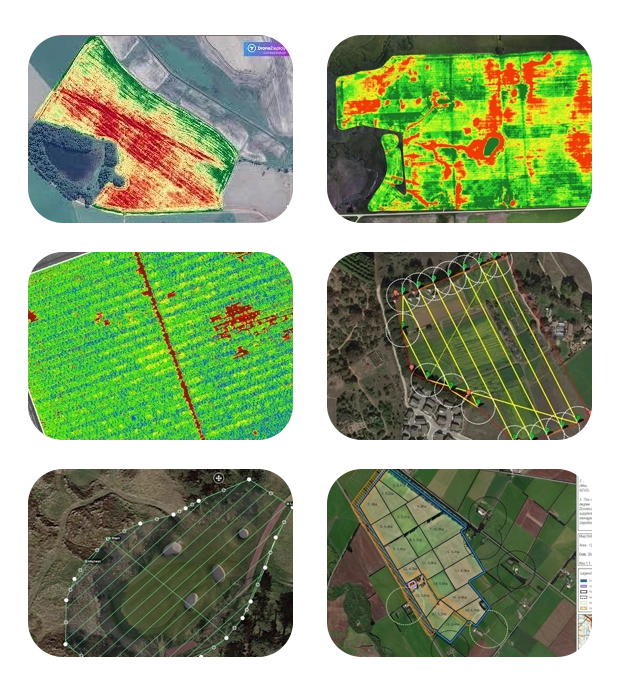
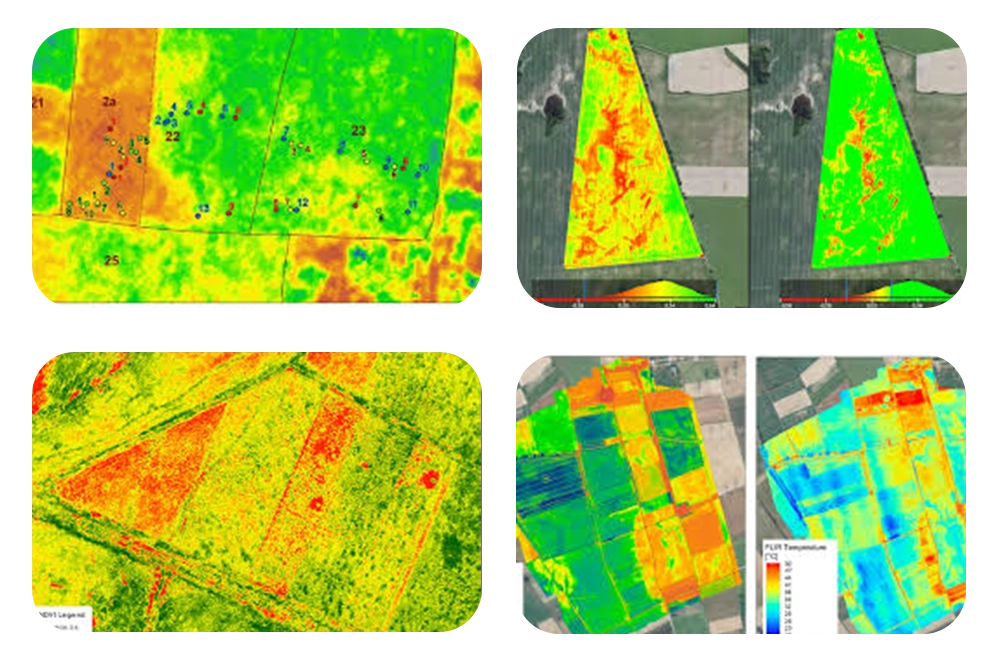
Plant health algorithms explained
Healthy plants reflect light differently than unhealthy plants. This allows us to pick out plants that may be under stress from disease, pests, dehydration, etc. This is done by using plant health algorithms such as the Visual Atmospheric Resistance Index (VARI), Normalized Difference Vegetation Index (NDVI), and Normalized Difference Red Edge (NDRE). These algorithms are the most commonly used for agricultural purposes.
VARI was designed to be used with RGB sensors and measures how green an image is. Healthy plants tend to reflect more green light and less red light. This allows VARI to highlight areas where less green light is being reflected, suggesting plant stress.
NDVI was designed to be used with NIR and multispectral cameras and measures the ratio between NIR and red being reflected from a plant. Plants that are healthy should be absorbing red light for photosynthesis and reflecting more NIR than stressed plants, allowing for this algorithm to indicate the health of plants.
NDRE was designed to be used as an index for multispectral cameras and measures the ratio between NIR and red edge being reflected from a plant. This algorithm is typically better in the later growth stages of crops, as Red edge is absorbed less than red light by surface leaves, giving a better overview of plant health when plant canopies are dense. NDRE gives a picture of leaf chlorophyll content, which is a good indicator of foliar nitrogen levels
UAV SERVICES FOR IRRIGATION
DATA PKT Infra & Geomatics provides aerial surveys for irrigation planning and monitoring, and for detecting irrigation problems. The work focuses on the land and soil factors that govern water management, using multispectral, hyperspectral, LiDAR and thermal sensors with GIS analysis to improve irrigation practice.
Soil moisture estimation is a key service. High-resolution aerial imagery and suitable sensors show soil moisture across fields, so farmers can schedule irrigation to avoid both water waste and crop water stress, improving yield and quality.
Efficient water management is critical in agriculture. Our aerial surveys give farmers and water resource managers the data to raise productivity while reducing environmental impact, with each survey planned around the client's needs. Our services are outlined in the following sections:
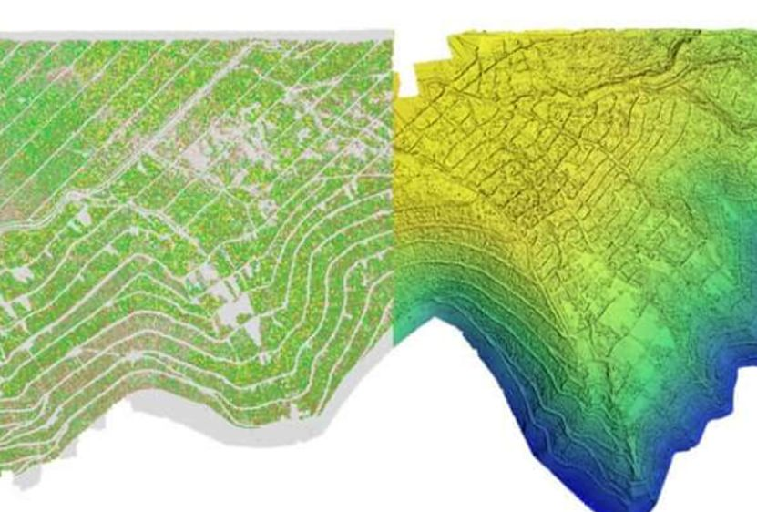
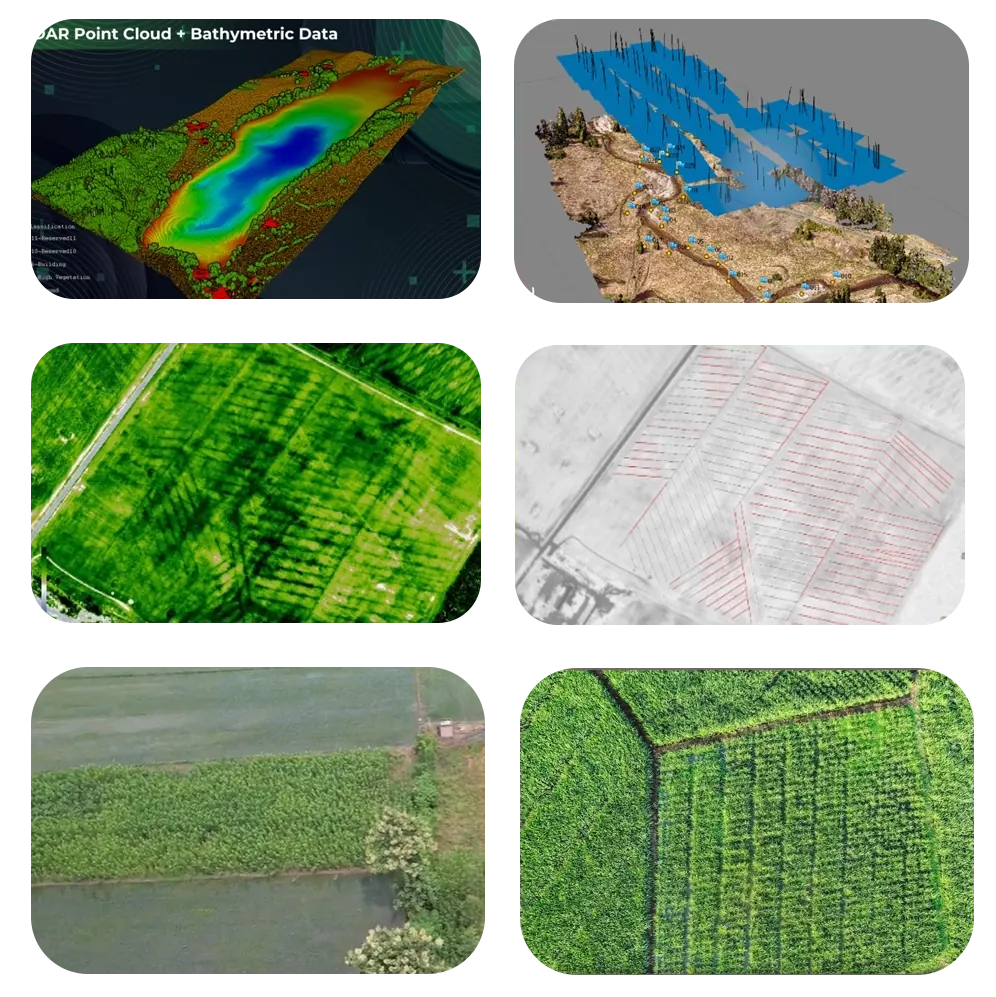
Our drone surveys provide timely data that can be acted on directly to improve irrigation operations.
Site Safety Management
We survey water bodies and their surroundings, produce 2D and 3D maps, estimate water coverage and assess irrigation needs for the surrounding land. Specialised software processes the imagery to measure water volumes and surface areas, information that is directly useful for water resource management.
Key uses of our drone-based water mapping and estimation services include:
- Monitoring water levels in lakes and reservoirs to plan water distribution
- Analysing river flow rates and water level changes as input to flood management planning
- Evaluating the quality of the water and locating areas of high contamination in order to implement targeted interventions
- Mapping wetlands and other environmentally valuable areas to support ecological research and conservation
Bathymetric Mapping
We provide bathymetric mapping to calculate the depths and volumes of rivers, lakes and other water bodies, using a sonar sensor that converts sound echoes into depth data.
Soil moisture estimation
Using thermal sensors and remote sensing, our drone surveys highlight areas receiving too little or too much moisture, providing data for precision irrigation.
Drainage planning
The topography of fields in RGB imagery helps farmers arrange and segregate crops to improve drainage, follow natural land runoff, and avoid waterlogging.
Site suitability for water storage
We assess sites for water storage by analysing slope, drainage density, land use and land cover.
Watershed area management
For watershed projects, we provide runoff estimates and water table data that are correct in space and time, combined with full 3D survey models showing riverbank migration, erosion and the condition of wetlands.
Drones support accurate planning and survey of all works, initial mapping of drainage lines and contours, and slope analysis. Combined with GIS and real-time weather data, this helps forecast how much water can be collected and used.
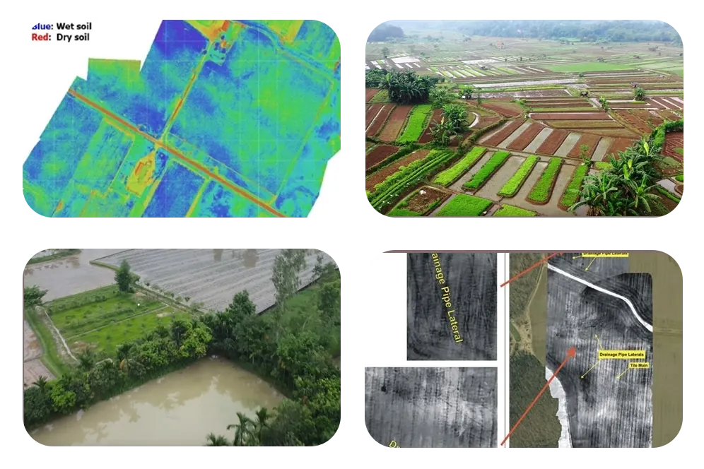
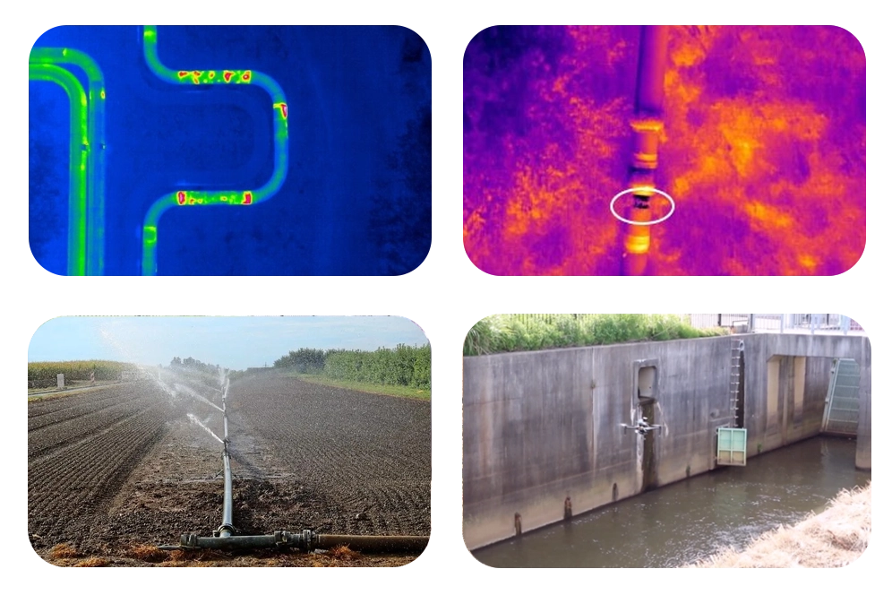
We provide services to monitor the infrastructure related to the irrigation management system.
Problem detection
Leaks and clogged pipes are the main problems in irrigation systems. We detect them using thermal and multispectral sensors.
- Thermal sensors detect changes in the ground temperature that indicate leaks.
- Multispectral sensors can detect regions where water is not circulating due to blockages or clogs.
Canal mapping
We offer aerial imagery from drone surveys to produce high-resolution and accurate orthophotos, digital elevation models (DEM), digital terrain models (DTM), and contour maps.
This data is used to model water movement so canals can be designed correctly, making it useful for canal route alignment surveys and surface models of link canals.
Canal crack detection [3D model of canal walls]
We build 3D models of canal walls for a complete inspection of their condition and any damage.
Canal water spread estimation
Using thermal sensors, we estimate the water spread of a canal, which helps identify land receiving too little or too much water.
Inspection of water theft
Our high-resolution aerial imagery and video let us inspect and monitor canals for water theft.
Tracking the progress of ongoing projects
Our high-resolution imagery captures the construction site from several angles and is used to build 3D models that show progress and flag potential issues early.
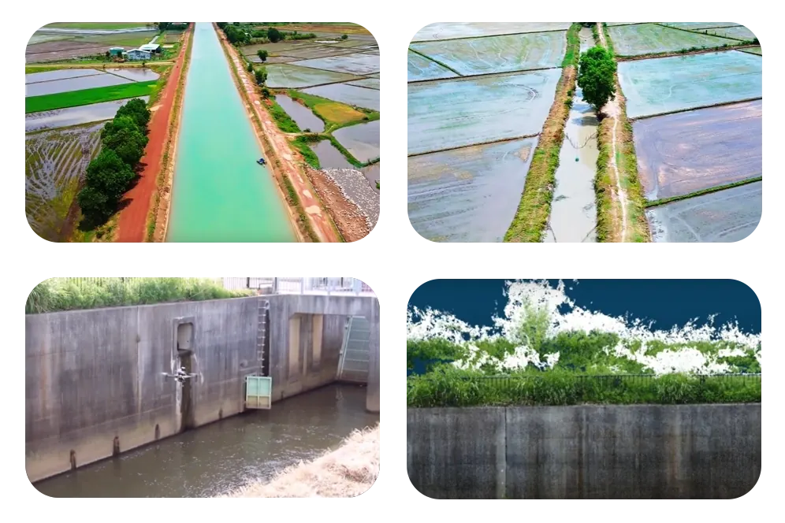
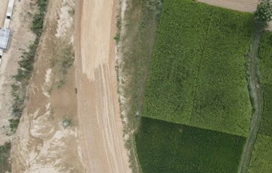
Visual inspection is the most common way to find leaks in a water pipeline system: pipelines, valves and other components are checked for signs of damage or leakage. Drones with high-resolution cameras supply real-time aerial imagery for these inspections.
This shows signs of deterioration or leakage, such as cracks, corrosion or misalignment, as soon as they appear. Our drone imagery and video help to:
- Monitor regions that are difficult to access without putting staff in danger
- Reduce the amount of time spent on site inspections
- Evaluating the quality of the water and locating areas of high contamination in order to implement targeted interventions.
- Detect cracks, corrosion, misalignment and other signs of deterioration or leakage from real-time aerial imagery.
- Cover the whole pipeline network, including areas that are hard or unsafe for staff to reach.
Multispectral imaging records several wavelengths to analyse different parts of a scene, such as vegetation, soil and water.
Drones with multispectral sensors help with leak detection, hydrological mapping and surveying in the following ways:
- Analysis of the vegetation: Extra soil moisture can make vegetation greener, which may indicate a leak.
- Moisture detection: The presence of moisture can be determined by using multispectral imaging. Water leaks have the potential to change the amount of moisture that is present in the soil.
- Change detection: We are able to identify possible leaks and track the course of breaches that are already present by comparing multispectral data at regular intervals.
By detecting, monitoring and fixing leaks in water distribution systems early, these surveys help conserve water and limit damage to infrastructure.
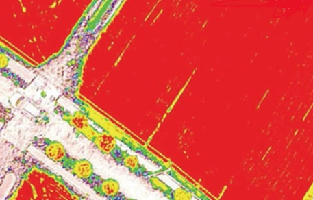
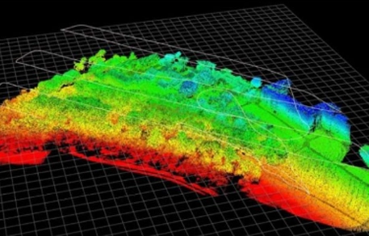
LiDAR (Light Detection and Ranging) uses laser pulses to produce detailed 3D maps of a water distribution system.
Combining drones and LiDAR allows us to:
- Measure the pipelines and their surroundings accurately.
- Detect small elevation changes or ground deformation that may indicate leaks, using high point-density data that gives a precise picture of the pipeline network.
- Detect leaks early to reduce water loss.
- Identify potential obstructions or encroachments near the water distribution system that could impact its functionality or integrity.
- Assess the overall condition of the infrastructure, including the presence of corrosion, cracks, or other signs of deterioration.
Thermal imaging uses infrared cameras to detect temperature changes on the surface of water pipelines and the surrounding ground.
When drones with thermal cameras are flown over a water distribution system:
- Warm areas can indicate leaks, since escaping water is at a different temperature from the surrounding soil.
- Temperature contrast shows the position and extent of leaks before they get worse.
- Temperature contrast shows the position and extent of leaks before they get worse.
- Detect leaks early from temperature variations on pipeline surfaces and the surrounding ground.
- Assess how severe and extensive leaks are from temperature contrast, so they can be fixed before they escalate.
- Locate leaks promptly to reduce water loss, structural damage and service disruption.
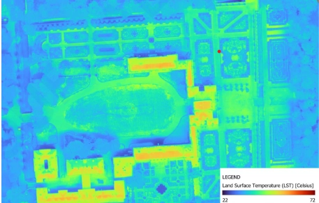
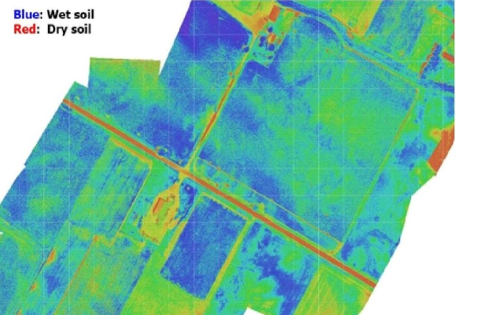
Using drones equipped with thermal sensors, our service provides swift and precise analysis of soil moisture. By capturing thermal images from aerial perspectives, we identify and map fluctuations in soil temperature, allowing for accurate evaluation of moisture levels. This data assists farmers in optimizing irrigation techniques, improving crop vitality, and maximizing harvest yields. Our advanced drone technology streamlines operations, reducing expenses and time investments while delivering crucial agricultural management insights.
Thermal imaging maps variation in soil temperature across a field, which shows how moisture is distributed and where irrigation is needed.
This is faster and cheaper than traditional soil assessment and supports decisions that affect yield.
Farmers get timely moisture maps that support efficient water use and consistent yields.
Deliverables
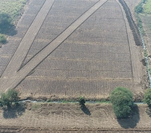
Aerial Imagery
High-resolution aerial photographs and videos provide comprehensive views of crop fields, allowing farmers to monitor crop health, detect pest infestations, and assess overall field conditions.
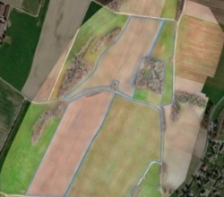
Orthomosaic Maps
Stitched together from hundreds or thousands of individual aerial images, orthomosaic maps offer accurate representations of farm fields, aiding in precise measurement, planning, and analysis.
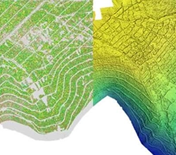
3D Models
We generate detailed 3D models of farmland from drone survey data, showing terrain, elevation changes and crop distribution for land management decisions.
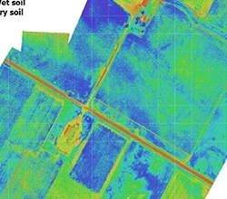
Soil Mapping
We collect data on soil properties, moisture and nutrient content to help optimise irrigation, fertiliser use and soil management.
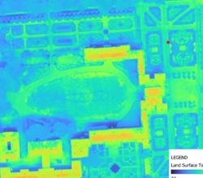
Crop Health Monitoring
Multispectral or thermal sensors capture data related to crop health, identifying areas of stress, disease, or nutrient deficiencies early on, allowing for targeted interventions and optimized crop management strategies.
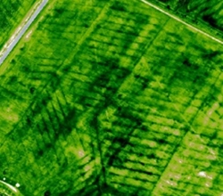
Precision Agriculture
We combine drone data with GPS and farm machinery for precision agriculture techniques such as variable-rate application of inputs, cutting costs and environmental impact.
Our Features
Multi-sensor surveys
RGB, multispectral, hyperspectral, LiDAR and thermal sensors, chosen for what the field needs to show.
Tied to ground control
Surveys are tied to DGPS ground control, so maps from repeat flights line up and change can be measured.

Efficient Data Processing
Our in-house GIS team processes and analyses drone survey data promptly, so farmers and agricultural stakeholders get usable results in time to act.
Accuracy
Drone surveys tied to DGPS ground control points for survey-grade accuracy.
Clientele
Clients include CCS Haryana Agricultural University (HAU), Hisar, ICAR, NABARD, ITC Limited, Godrej, Rallis India, Jain Irrigation Systems and APMC Vadodara.
Frequently asked questions
What is NDVI?
NDVI (Normalised Difference Vegetation Index) is a measure of plant health calculated from red and near-infrared light. Healthy vegetation reflects more near-infrared, so stressed areas show up clearly on an NDVI map.
What camera is used for crop health mapping?
A multispectral camera that records near-infrared and other bands as well as visible light. Hyperspectral cameras record many narrow bands for research-level analysis.
What can drone maps do for a farm or plantation?
Show crop stress and variation across fields, map field boundaries and drainage, count plants or trees, and help plan inputs where they are needed.
Is drone mapping useful for agricultural research?
Yes. Repeated multispectral flights give consistent, measurable data on plots over the season.